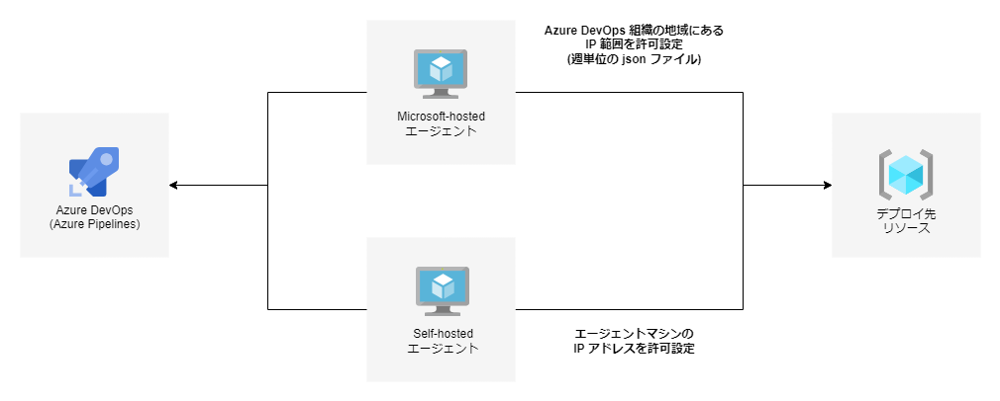
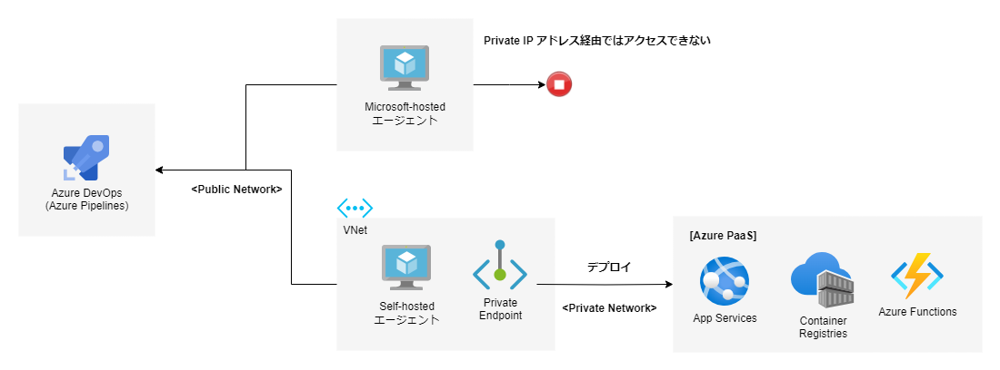

こんにちは、Japan Developer Support Core チームです🐈
今日は Azure Pipelines で利用するエージェントの IP アドレスについて概要を解説しつつ、様々なシナリオを例にまとめていきます。 この記事を読むことで、エージェントの IP アドレスに対しての知識が深まり、どういったシナリオのときに、どういったエージェントを使うことが適切なのかを知ることができます。 Azure リソースと連携したシナリオもたくさん記載しましたので、ぜひ皆様のビジネスにご活用ください。
Azure Pipelines エージェントに求められるネットワーク通信
初めに、Azure Pipelines エージェントに求められるネットワーク通信経路について、説明いたします！ Azure DevOps Services は Azure クラウド ネットワーク上で提供される Microsoft のサービスの一つであり、Azure Pipelines はこの Azure DevOps Services が提供する機能の一つです。 そして、Azure Pipelines から行うビルドやリリース (デプロイ) といった処理は、実際には Azure DevOps Services ではなく、Azure Pipelines エージェントと呼ばれるプログラムが行っています。 このため、Azure Pipelines エージェントは、ビルドやリリース (デプロイ) 作業に必要となる各種ネットワーク資源やネットワーク サービスと、ネットワーク通信してアクセスできる必要があります。
Azure Pipelines エージェントの IP
Azure Pipelines エージェントには以下の 3 種類があり、それぞれ利用可能な IP アドレスが異なります。
- Microsoft-hosted エージェント
- Self-hosted エージェント
- Azure 仮想マシンスケールセット エージェント
- マネージド DevOps プール
Azure Pipelines エージェント - Azure Pipelines | Microsoft Docs
それぞれ詳しく見ていきましょう！
Microsoft-hosted エージェント
Microsoft-hosted エージェントは、Azure DevOps Services の組織 (organization) と同じ Azure 地域の IP 範囲を利用します。例えば、Azure DevOps Services の組織を東南アジア地域で作成した場合は、 Microsoft-hosted エージェントも東南アジア リージョン AzureCloud.southeastasia の IP 範囲、そして同じアジア太平洋に属する東アジア リージョン AzureCloud.eastasia の IP 範囲を利用します。
利用される IP 範囲は、週単位の json ファイル によって公開されています。
Microsoft がホストする Azure Pipelines - Azure Pipelines | Microsoft Docs
※上記ドキュメントサイトに、南ブラジルおよび西ヨーロッパ リージョンをご利用いただく場合の注意点、ならびに Mac IP 範囲の注意点を記載しています。もしもこれらのリージョンや Mac IP 範囲を利用する場合は、ご確認いただくことをお勧めします。
Self-hosted エージェント
Self-hosted エージェントが利用する IP アドレスは、エージェント機能をインストールしたマシンの IP アドレスです。 よくある Self-hosted エージェントの構成パターンとしては、以下の 2 種類があります。
- クラウド上に仮想マシンを作成して、エージェント機能をインストールする。
- オンプレミス環境に物理的・仮想的に用意したマシンにエージェント機能をインストールする。
クラウド上の仮想マシンの場合は、その仮想マシンが利用する Public IP アドレスを利用して Azure DevOps Services との通信を行います。 オンプレミス環境に物理的・仮想的に用意したマシンも同じように、インターネットへ接続するための Public IP アドレスを利用して Azure DevOps Services との通信を行います。
どちらのパターンも、Azure DevOps Services との通信を行うためにはインターネットへの接続が必要となりますので、インターネット接続を完全に遮断しているマシンではご利用いただけません。
Azure 仮想マシンスケールセット エージェント (VMSS)
Azure 仮想マシンスケールセット エージェント (VMSS) が利用する IP アドレスは、 Azure 仮想マシンスケールセットに設定した Public IP アドレスです。
Azure 仮想マシン スケール セット エージェント - Azure Pipelines | Microsoft Docs
Azure Pipelines エージェントの分類としては Self-hosted エージェントと同じ扱いになりますが、 IP アドレスの観点からは次のような特徴があります。
- Azure DevOps Services との通信に使用する Public IP アドレスは、インターネットへの接続が必要です。(Self-hosted agent の場合と同じです)
- ビルド時やデプロイ時にローカルのネットワークとの通信が必要になる場合は、要件によっては VMSS での対応が難しくなるケースがあります。
マネージド DevOps プール (MDP)
マネージド DevOps プール (MDP) が利用する IP アドレスは、Microsoft が提供する分離された仮想ネットワーク、および利用者が作成した既存の仮想ネットワークの二つをご利用いただけます。
ネットワークを構成する - Managed DevOps Pools | Microsoft Learn
こちらも Azure Pipelines エージェントの分類としては Self-hosted エージェントと同じ扱いになりますが、 IP アドレスの観点からは次のような特徴があります。
Microsoft が提供する分離された仮想ネットワーク
Microsoft が提供する分離された仮想ネットワークでは、Public IP アドレス経由のルートを 「なし」 または 「Microsoft 提供 IP」 のどちらか一方を選択することができます。
- なし: Microsoft が提供する Public IP アドレスを使用してすべての送信トラフィックを許可します。「なし」というのは Public IP アドレスの設定を「何も設定せず」ということであり、インターネットを経由する送信トラフィックを制限するものではないことにご注意ください。
また、 Azure の更新情報 にもあるように、既定のアウトバウンド接続が廃止となる影響を受けることから、こちらの設定も合わせて廃止予定となっています。 - Microsoft 提供 IP: 最大 16 個の静的送信 IP アドレスを使用するようにプールを構成できます。これによりプールと同じリージョンに NAT ゲートウェイが作成され、Public IP アドレスが提供されます。 NAT ゲートウェイや Public IP アドレス等のリソースは、お客様にて管理いただく必要はございません。
利用者が作成した既存の仮想ネットワーク
利用者が作成した仮想ネットワークおよびサブネットを選択することができます。
仮想ネットワークに設定した通信方法を用いてアウトバウンド接続を接続をするため、例えば仮想ネットワークのサブネットに NAT ゲートウェイ リソースを紐づけている場合には、 NAT ゲートウェイに設定したアウトバウンド IP 設定を用いた Public IP アドレスが利用されます。
シナリオごとのエージェント
それでは、実際のシナリオごとに、必要となるエージェントの IP 設定を見ていきましょう。 VMSS は Self-hosted エージェントと同じ扱いになりますので、シナリオでは Microsoft-hosted エージェントと Self-hosted エージェントに焦点を当てて見ていきます。
エージェントマシンが Azure DevOps Services に接続するための許可ルールを設定したい
Microsoft-hosted エージェントの場合は、Azure DevOps Services に接続するための許可ルールを追加設定する必要はありません。
Self-hosted エージェントの場合は、エージェントマシンに IP アドレスと範囲の制限 - Azure DevOps | Microsoft Docs を設定いただくことで、 Azure DevOps Services との通信が可能になります。
注意点としましては、 Azure Pipelines でビルドやリリース (デプロイ) を実行したときに、Azure DevOps Services 以外の URL へアクセスする必要がある場合です。例えば、スクリプトから pip install を実行したときには、https://pypi.org/ へのアクセスが発生します。
そのため、ホワイトリスト形式で許可ルールを設定する場合は、Azure DevOps Services への許可ルールだけではなく、ビルドやリリース (デプロイ) を実行したときに必要な許可ルールも設定する必要があります。
エージェントの IP アドレスからのみアクセス、またはデプロイを許可したい

Microsoft-hosted エージェントの場合は、週単位の json ファイル を利用して、 Azure DevOps Services の組織が利用している地域の IP 範囲を許可する必要があります。 なお、セキュリティ - Azure Pipelines | Microsoft Docs のドキュメントサイトに記載のあるとおり、週単位の json ファイル に記載されている IP アドレスの範囲はかなり広く、この範囲にあるマシンは他のお客様のものである可能性もあります。Microsoft-hosted エージェントのご利用をご検討の際には、この点を踏まえて設計いただくことをお勧めします。
Self-hosted エージェントの場合は、エージェント機能をインストールしたマシンの IP アドレスを固定していただき、その IP アドレスからのアクセスを許可することで実現できます。
Public ネットワークへの通信が制限された、オンプレミス環境のサーバーへデプロイしたい
Microsoft-hosted エージェントの場合は、Microsoft-hosted エージェントからオンプレミス環境へネットワーク通信してアクセスすることができないため、残念ながら実現できません。
Self-hosted エージェントの場合は、オンプレミス環境にあるマシンにエージェント機能をインストールしていただき、そのマシンにおいて以下の条件を満たすことにより、実現が可能です。
- Azure DevOps Services に対し、ネットワーク通信してアクセス可能であること
- Public ネットワークへの通信が制限されたオンプレミス環境のサーバーに対し、ネットワーク通信してアクセス可能であること
Azure Web App や Azure Container Registry といった PaaS リソースに対して Private IP アドレス経由でデプロイしたい
Azure の Virtual Network (VNet) とプライベートエンドポイントを利用することにより、実現が可能です。

Microsoft-hosted エージェントの場合は、エージェントが稼働するマシンに VNet を設定することができないため、残念ながら実現できません。
Self-hosted エージェントの場合は、Azure 上に仮想マシン (Azure VM または、仮想マシンスケールセット) を作成すれば、作成した仮想マシンに VNet を設定することができますので、実現が可能です。
マネージド DevOps プール (MDP) を利用する場合にも同様に VNet を設定することができますので、実現が可能です。
また、PaaS リソース (Azure Web App や Azure Container Registry など) に対して作成した VNet を、プライベートエンドポイントとして設定いただくことで、Self-hosted エージェントが稼働するマシンと PaaS リソース間で Private IP によるネットワーク通信が可能になりますので、デプロイを実現することが可能です。
最後に
いかがでしたでしょうか？ ご利用の Azure Pipelines エージェントの種類や、ネットワーク構成などのシナリオによって千差万別ではありますが、今後の Azure Pipelines エージェント運用の際に参考としていただけたらとても嬉しいです。 今後も Azure DevOps のご利用にお役立ていただける情報をどんどんご紹介していきたいと思いますので、どうぞよろしくお願いします！
本ブログの内容は弊社の公式見解として保証されるものではなく、開発・運用時の参考情報としてご活用いただくことを目的としています。もし公式な見解が必要な場合は、弊社ドキュメント (https://learn.microsoft.com や https://support.microsoft.com) をご参照いただくか、もしくは私共サポートまでお問い合わせください。